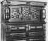

| Edward* WINSLOW (1560 - <1631) |
|
| Magdalen* OLLYVER (1566 - ca1605) |
| Lieut. Kenelm WINSLOW | Eleanor NEWTON |
| b. 29 Apr 1599, Droitwich, Worcestershire, England d. 13 Sep 1672, Salem, Essex, MA, Age: 73 br. bp. 3 May 1599 im. |
b. abt 1598, England d. bef 5 Dec 1681, Marshfield, Plymouth, MA, Age: 83 br. 5 Dec 1681, Marshfield, Plymouth, MA bp. im. Jun 1623, Plymouth, MA, Age: 25 |
| Kenelm WINSLOW |